17 основных кадровA +2 запасныхB. Все19PNG сохранены в assets/shots/. Нативные1672×940–941, встроенный image_gen, без апскейла и API. Нажмите на изображение, чтобы открыть оригинал.
Эпоха 6 · 2019

e6_terrace · A
Июль 2019: тебя знакомят с Леной
1672×941 · проб:1
Faces, adult stubble, wardrobe, cream mug, terrace architecture and light match the approved references. Bottom fifth includes neutral trousers/cardigan and left chair legs; no face or mug in subtitle area.
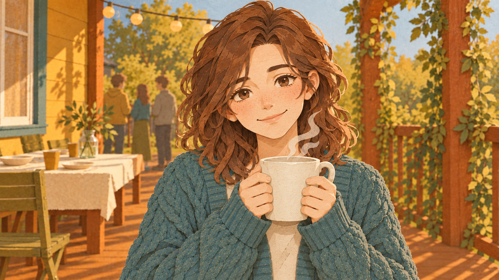
e6_lena_cup_cu · A
Крупно: Лена греет руки о кружку
1672×941 · проб:2
Corrected composition: hands and mug lifted above bottom fifth, identity and warm terrace matched. Mug lower edge near79% rather than requested75%; bottom20% remains free of hands and mug. Hair close to upper edge.

e6_dishes · B
«Будете ругаться из-за немытой посуды»
1672×941 · проб:1
PriorityB: dirty plates, exactly two mugs and restrained argument gestures at sides; cream shirt and teal cardigan match. Sink-side continuation of adult kitchen material/palette; no red/text. Counter and gestures above75%, quiet cabinet fronts below. Partial faces at top frame edges.
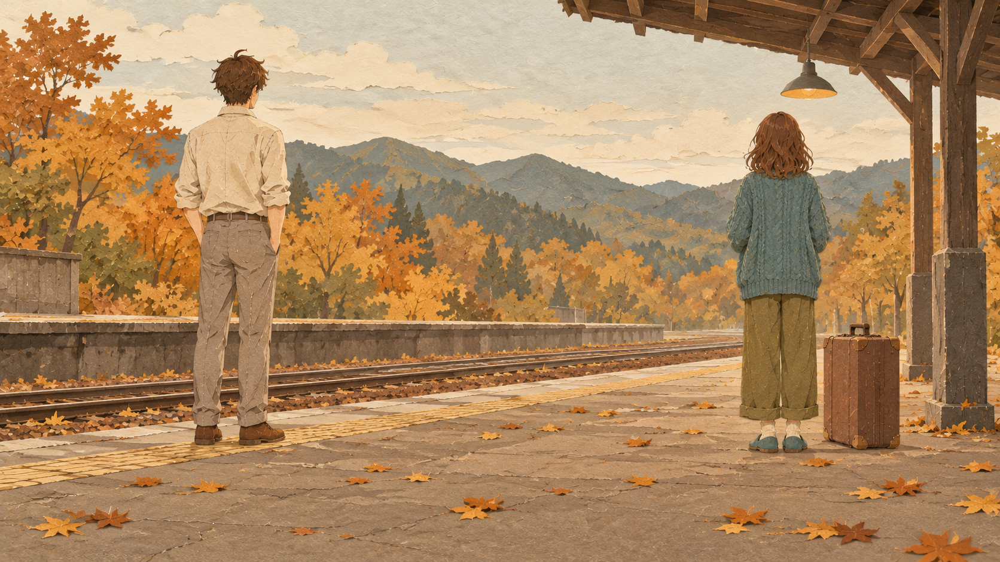
e6_station · B
«Расстанетесь на вокзале»
1672×941 · проб:1
PriorityB: two adults far apart from behind on autumn railway platform, no faces, one suitcase beside Lena. Recognizable hair/cardigan and cream shirt; no text/red. Quiet foreground paving with leaves; feet and suitcase base reach80% instead of requested75%.

e6_cups · A
«Но сначала моешь за собой чашку»
1672×941 · проб:1
Sasha carries used cups left toward kitchen, Lena watches with own mug; adult faces, cardigan and terrace match. No text/red. Bottom fifth contains quiet trousers and floor.
Поворот · 2024
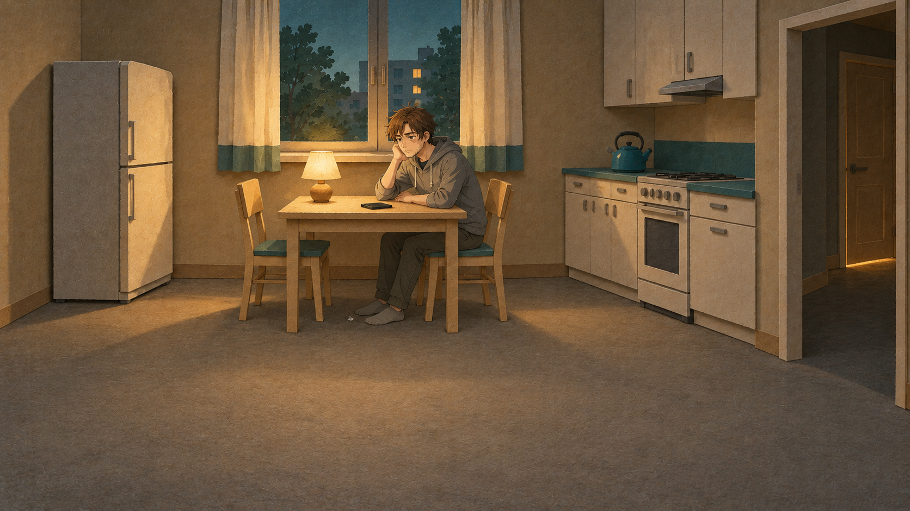
t_night_kitchen · A
Март 2024: ночь, телефон тёмный
1672×941 · проб:1
Kitchen architecture, off phone,31yo hoodie Sasha, night window and warm bedroom light retained. Bottom fifth clear floor. Face small in wide establishing shot; lamp makes foreground warmer than desired cool tone. Tiny paper scrap near chair.
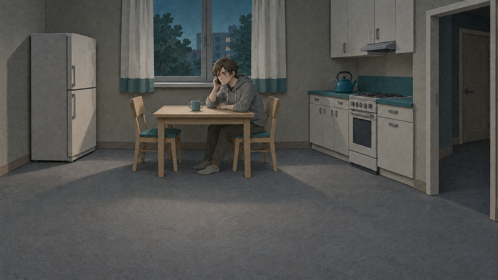
t_old_night · A
Первая жизнь: три часа ночи, ты набираешь брата
1672×941 · проб:1
First-life flashback matched kitchen and hoodie; phone held at ear, unwashed mug, bedroom light absent, cooler desaturated palette. Clear lower fifth. Face and phone small in wide establishing shot.
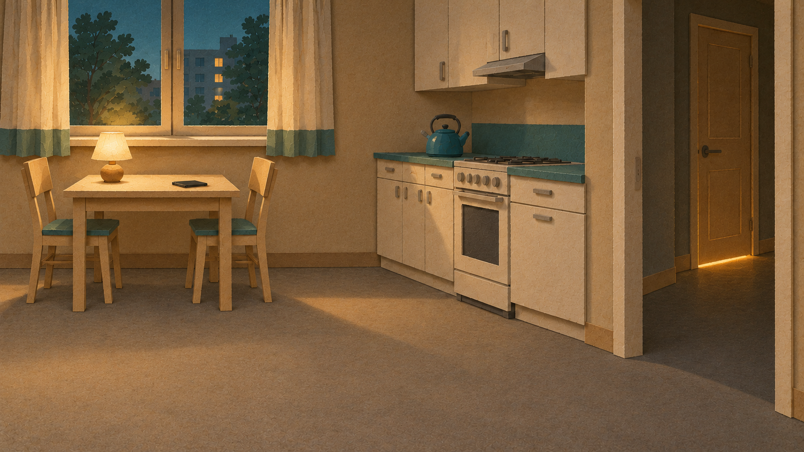
t_light_strip · A
«Из-под двери полоска света: там спит Лена»
1672×941 · проб:1
No people. Camera closer to far-right closed bedroom door; light strip clearly visible, dark phone on table at left. Kitchen geometry, lamp and night window consistent. Bottom fifth clear floor.
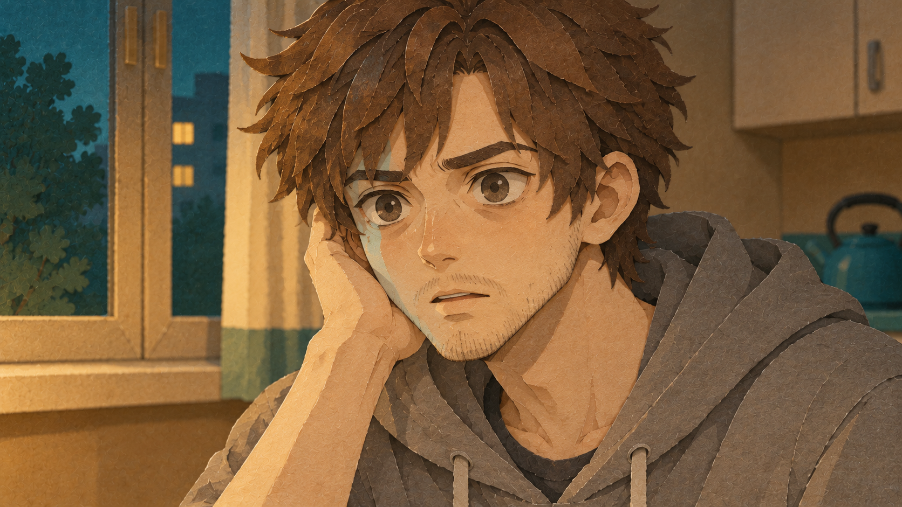
t_realize_cu · A
«И тут до тебя доходит»
1672×941 · проб:1
31yo gray hoodie, stubble and tired eye identity preserved; subtle realization with widened eyes. Teal window light on cheek, phone remains off/out of frame. Face above75%; top hair cropped by deliberate tight close-up, forearm crosses bottom fifth.
Финал · 2026
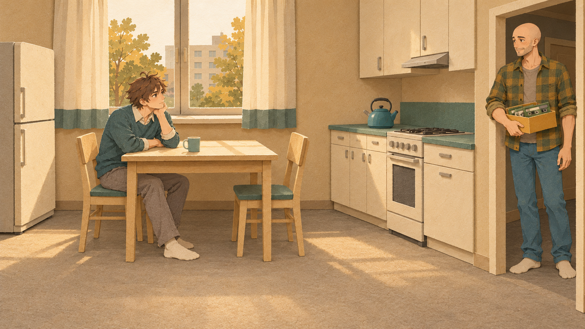
f_kostya_door · A
Осень 2026: Костя (лысый, 38) с коробкой на пороге
1672×941 · проб:1
Bald38yo Kostya at right doorway with shoebox, clean-shaven33yo Sasha at left table; adult wardrobe and approved kitchen matched. Warm autumn light. Faces/box above75%; Kostya feet at far-right bottom fifth, subtitle center clear. Bare feet instead of shoes.
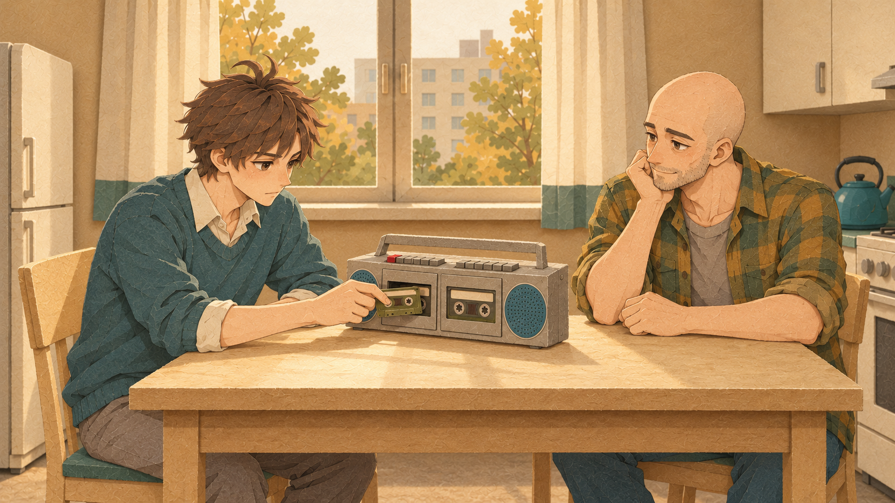
f_player · A
Ты ставишь «2024»: тишина, шипение, «Он ответил»
1672×941 · проб:1
Readable medium two-shot;33yo clean-shaven Sasha inserts olive tape at left bay, bald Kostya listens right. Deck has twin bays, teal speakers, handle and top key banks with only one red key. Faces/actions above75%; quiet lower table apron/legs.

f_kostya_frown · A
«— Это что? — Ночь, когда ты мне ответил»
1672×940 · проб:1
Bald Kostya38 puzzled close-up matches flannel, stubble and warm kitchen; Sasha teal shoulder at left. Main face crisp and above75%; foreground shoulder and distant set softer than requested uniform sharpness, forearms occupy side of lower fifth.

f_pat · A
«— Дурак, — говорит он и хлопает тебя по плечу»
1672×941 · проб:2
Continuity corrected: both cassette bays closed and Sasha hand resting on table; natural shoulder pat and gentle smiles. Wardrobes, faces, recorder body and kitchen matched. Record key rendered neutral in no-red shot instead of occluded; may need code color continuity. Bottom fifth quiet table apron.
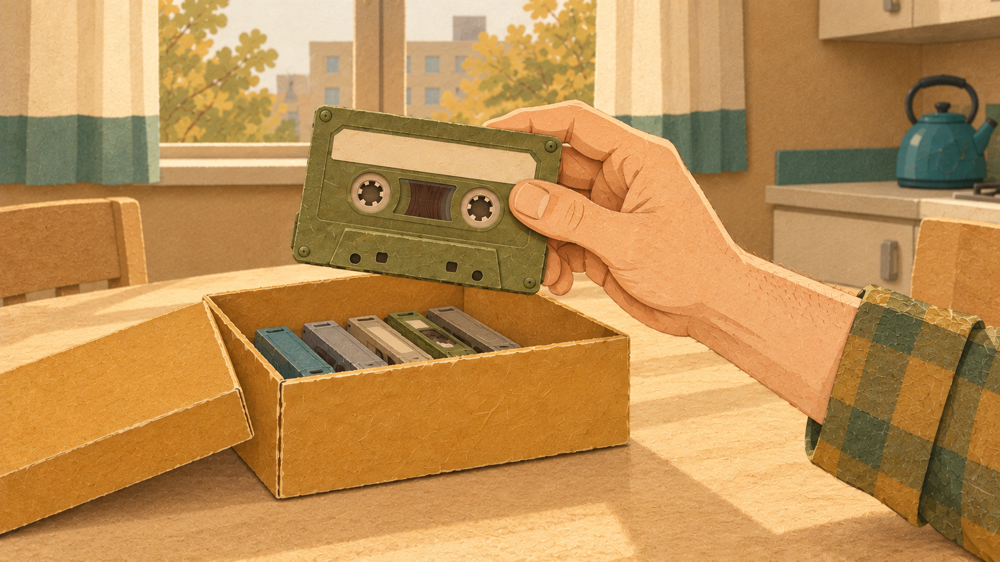
f_last_tape · A
«Остаётся одна. «2026», детским почерком»
1672×941 · проб:1
Adult checked-cuff hand lifts one large olive cassette with empty cream label; prop identity, mustard shoebox and warm kitchen consistent. Cassette/hand above75%; box and forearm extend into side lower fifth. Several other stored tapes remain in box.

f_rec_keys · A
«Нажимаешь обе кнопки сразу, как учил брат»
1672×941 · проб:3
Third attempt selected: adult index/middle fingertips press adjacent red/gray TOP keys, no spacer. Twin-deck topology preserved: left speaker, left cassette bay and partial right bay. Sharp reels, blank label. Fingers used instead of thumb/index for reliable anatomy. No lower subtitle constraint for macro.
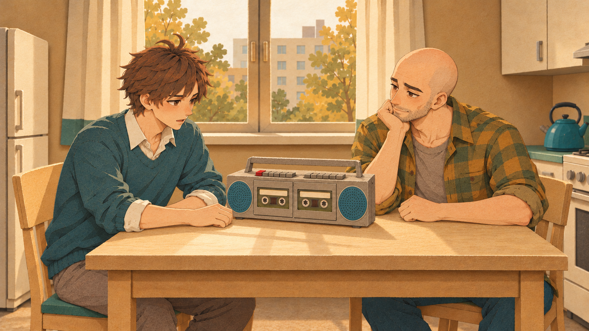
f_recording · A
«…рассказываешь тому пацану, которому некому было сказать»
1672×941 · проб:1
Final recording: Sasha speaks gently, Kostya listens chin on fist. Both cassette bays closed, no loose tape, top red record key only. Faces, clothes, kitchen and deck consistent; all main action above75%, bottom fifth table apron/neutral legs.
Вопрос
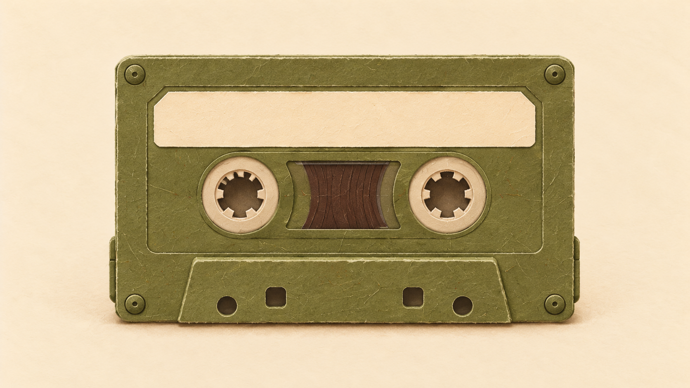
q_blank_tape · A
«Одна кассета, девяносто минут и один человек»
1672×940 · проб:1
One centered olive cassette, crisp reels and shell, broad blank cream label on plain cream paper. No text, hands, recorder or red. Native object close-up; lower fifth exemption.
Превью
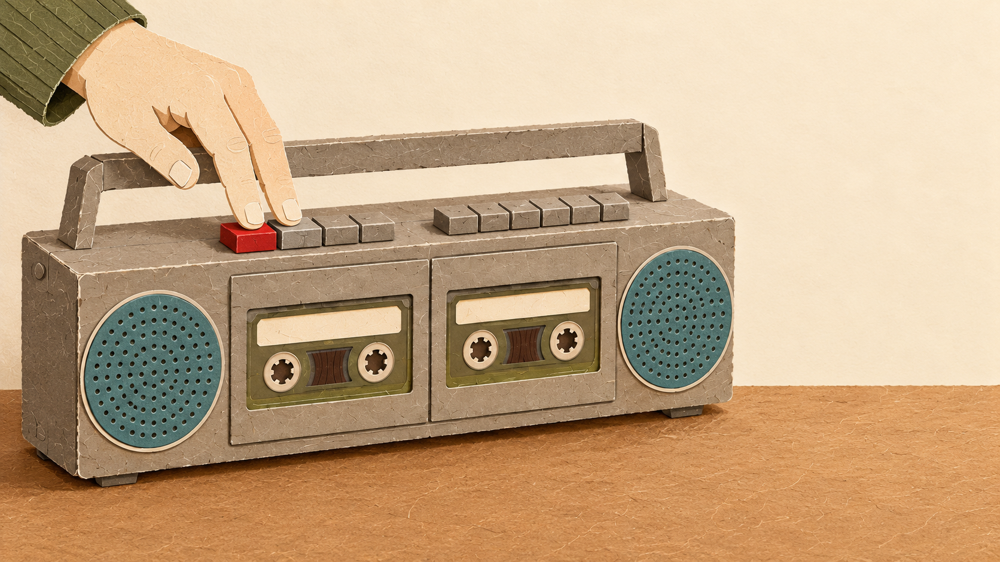
pv_a_deck · A
Превью A: двухкассетник, палец на двух кнопках, кассета «2024»
1672×941 · проб:1
Thumbnail A: clear twin deck, two fingertips on adjacent TOP red/gray keys, large blank labels, strong silhouette, clean right-quarter cream area. No text or symbols. Deck fills about74% width rather than requested two-thirds, lower edge at86% height.

pv_b_boy · A
Превью B: мальчик 12 лет со взрослыми глазами, календарь за спиной
1672×941 · проб:1
Thumbnail B:12yo olive-pocket-shirt Sasha with serious adult eyes, matching portrait identity. Blank calendar with sole red header, geometric carpet, quiet right side for title. No letters/numbers. Background retains cream/brick wall split rather than entirely cream right area.